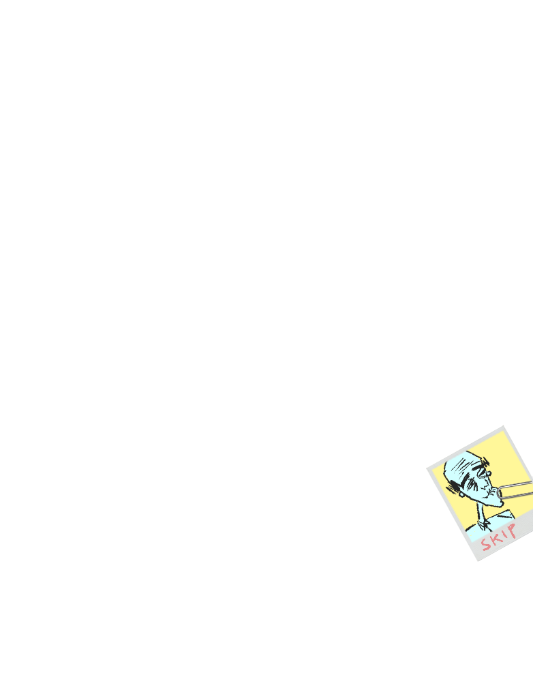
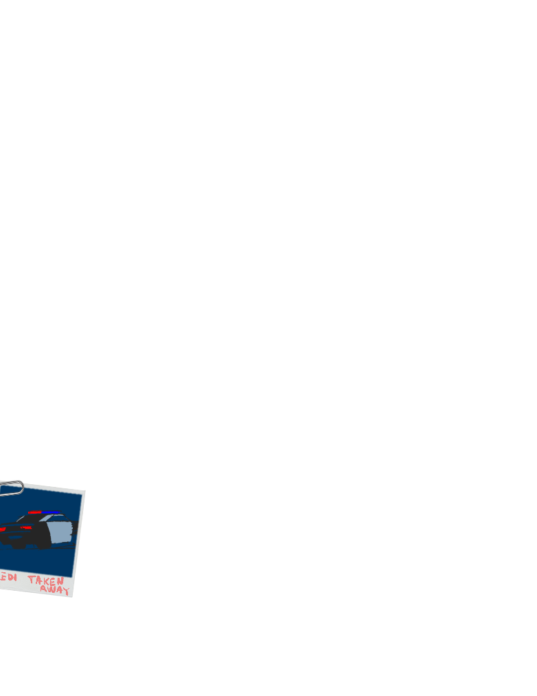

20.
PART THREE
INT. SCIENCE CLASSROOM - DAY
Hartman, Jarvis, Fredi enter the class. Sheriff Brownwell,
the guest lecturer from science class, stands waiting.
HARTMAN
Thanks for joining us, Sheriff.
SHERIFF BROWNWELL
No problem, I happened to already
be here today.
(to Fredi)
Hey, did you like my demonstration?
Hartman quickly looks around.
HARTMAN
There’s nothing here. If there was
it’s been contaminated. Let’s move.
(to Fredi)
Fredi, is there any security
footage on this campus?
FREDI
Security footage? Nononono, we
don’t. Nope. None. I wish--
INT. SECURITY FOOTAGE ROOM - DAY
Hartman, Jarvis, Brownwell, and Fredi are in a control room.
The security guard, SKIP ROSSMAN (old, senile) guides them.
SKIP
Security footage? Yeah, that’s
easy.
SHERIFF BROWNWELL
(smiling)
We appreciate the help, Skip.
SKIP
Aw, Sheriff. Now that there is a
smile that says “this man is about
to give me a handshake that says
‘this man is smiling’”.
SHERIFF BROWNWELL
(so flattered)
Oh, well. Heh. I mean I do try.
21.
Skip and the Sheriff exchange a too-long handshake.
HARTMAN
Focus.
SKIP
SHERIFF BROWNWELL
Total sweetie.
Right.
HARTMAN
Could you play the footage from the
front gate? From two weeks ago,
Thursday, around 5pm.
Skip rewinds the footage. Suddenly there’s white-ish static
and light.
SKIP
Shoot, seems to be scrambled.
Happens with these old cameras.
JARVIS
Wait! Pause! Right there.
Fredi tenses. Skip pauses the footage. He zooms into the
front gate.
There’s something...
JARVIS (CONT'D)
(gravely)
Jesus Christ.
It’s a blurry, unidentifiable image of something exiting the
gates. It looks like...
HARTMAN
Just looks like a snowflake?
JARVIS
That could be our assailant.
HARTMAN
No, I’m talking about a literal
snowflake, not snowflake like some
liberal arts kid.
JARVIS
So am I. I know some people who
literally look like a snowflake. We
might’ve cracked the case--
HARTMAN
Okay... No, we didn’t... Skip, is
there any other footage?
22.
SKIP
No. These are the only cameras that
are always on.
Fredi loosens back up.
SKIP (CONT'D)
However, the elevator cameras turn
on whenever someone uses them.
Fredi tenses again.
FREDI
HARTMAN
Did I take the elevator?
Play the elevator footage.
SKIP
What was that?
HARTMAN
Play the elevator footage.
SKIP
Sure can do, missus.
He fumbles around with different buttons and switches.
SKIP (CONT'D)
Well that is just spooky. I don’t
seem to have it here.
(chuckling, oldly)
Oh, that’s right. I purged the
elevator footage to make space on
the hard drives a couple weeks ago.
Fredi loosens back up.
HARTMAN
You deleted potential evidence
right after an investigation was
opened?
SKIP
Yes. The footage was too high-
definition and crystal-clear. In
other words: it was too good. Took
up way too much memory space.
(beat)
Hey, don’t look at me like that. If
I didn’t clear the elevator
footage, I would’ve had to delete
the front-gate footage. And we
woulda never caught that liberal
arts snowflake.
23.
JARVIS
Guess that means we have no choice.
SKIP
Yup.
(dramatic beat)
It means we’ll have to individually
go up to the cameras, the elevator
cameras that is, and physically
smash the cameras out of the camera-
nooks in the ceilings with cameras
so we can pry open the cameras and
look at the camera footage saved on
the cameras’ local camera-footage
camera-memory reserves.
JARVIS
(jumbled)
Exactly: caram-rer-ras.
The Sheriff looks puzzled. Fredi tenses again.
INT. ELEVATOR - DAY
They all stand idly.
JARVIS
So where’s the cameras then.
SKIP
I don’t quite remember, if I’m
being honest.
HARTMAN
Fuck’s sake, old man.
Suddenly Skip spins around and blindly SWATS at a ceiling
panel, badly damaging it. A camera falls out, now dented.
SKIP
To be honest, I didn’t think that’d
work! That’s why I always say:
“Give it a try before you give it a
rest, Skip. If you don’t know where
to aim, then just fire from the
hip!” That’s also why I always say,
“Cameras.”
He picks up the camera and they all lean in to take a look.
The camera screen is literally so tiny.
Fredi loosens back up.
24.
HARTMAN
Just what are we looking at.
SKIP
The camera screen. It’s 4096 x 2160
pixels, simply excellent
resolution. The pixels themselves
just happen to be tiny, physically,
which results in the technology
that you’re looking at right here:
ultra-small micro-screen display.
HARTMAN
How is it possible that someone
intentionally engineered a screen
so small that it’s unviewable?
SKIP
Correct.
HARTMAN
What?
SKIP
Luckily, these top-secret security
cameras connect to facebook and
social media, so what I’ll do is
publicly upload this footage onto
facebook, and then one of us can
pull it up on their hi-res phone or
laptop. And we can huddle up and
watch it together. Sound good?
A beat. They all look at each other. Then back to Skip.
SHERIFF BROWNWELL
JARVIS
I’unno. Sure?
Let’s do it, goddammit.
HARTMAN
That makes no sense! Just stick the
memory card in a laptop.
SKIP
Complicated, but sure. Now it says
here, “The only rule is: Do not
remove the back panel,” which means
in order to work around that rule
what I can do is... ignore that
rule and remove the panel anyways.
Skip viciously rips off the back panel, revealing wiring and
exposed hardware.
25.
SKIP (CONT'D)
Ahah! Now, if I can just find the
memory card. It’s in here
somewhere... Where are ya...
Fredi fidgets nervously. Her eyes dart around. Skip prods
around. Then--
FREDI
(screaming)
Wait! Stop!
SKIP
Fredi, I hope this is important. My
attention is delicate, and once
it’s gone, it’s gone--
FREDI
I’m sorry. I lied!
They all turn to face Fredi.
FREDI (CONT'D)
I was there with Prof. Hahm the
night that he died!
They all look shocked. Fredi looks ashamed.
FREDI (CONT'D)
I’ll tell you everything. So first,
I stopped by since I had a homework
question. Next thing I know, he was
dead. That’s all the details.
HARTMAN
I feel like you’re missing details.
INT. HALLWAY - DAY
Right around the corner is Munday, eavesdropping on them all.
FREDI (O.S.)
... so I came back, knocked on his
door, and asked if he was taking
another office-shit. He wasn’t, so
I opened the door and saw... blood
everywhere. I keep reliving that
moment, wishing it wasn’t real.
Wishing we could’ve, I don’t know,
just shared an office-shit.
HARTMAN (O.S.)
Okay, that was too many details.

26.
INT. SECRET TUNNELS - DAY
Munday slides back to the secret tunnels through a wall-door.
MUNDAY
It was Fredi all along? Definitely
the “least likely suspect” I guess.
It’d make for a good riddle.
In his hand, he carries the elevator cam memory chip.
MUNDAY (CONT'D)
Well, I don’t need this elevator
footage anymore. But... I did go
through all that trouble of
carefully extracting the camera and
chip, and reassembling the delicate
camera intact, which Skip
ultimately smashed to pieces for no
reason.
Munday plugs the chip into his phone. It loads.
MUNDAY (CONT'D)
So after all that, I might as well
have a look at the footage.
He skips around, then suddenly pauses. The camera footage
turns white-ish and fuzzy.
MUNDAY (CONT'D)
What? It’s damaged...
When the footage unscrambles, the elevator is on the 5th
floor.
MUNDAY (CONT'D)
Right around his time of death.
EXT. SCHOOL GATES - DAY
Fredi is led into a police car. The Sheriff looks conflicted.
From behind a corner, Munday watches.
SHERIFF BROWNWELL
Oh this is not good.
HARTMAN
What.
27.
SHERIFF BROWNWELL
There’s... there’s not enough room
for all of us.
HARTMAN
(counting everyone)
You’ve got a sharp eye, Sheriff.
SHERIFF BROWNWELL
It’s from years on the job. Now,
does someone wanna sit with Fredi
in the back seats, which we all
know are reserved for the
criminals, AKA the bad guys?
Silence.
SHERIFF BROWNWELL (CONT'D)
No? Alright, Jarvis-- looks like
you’re gonna have to call an Uber.
JARVIS
What? Why me? I’m the one who rode
here with Hartman! How’d you get
here Sheriff, didn’t you drive your
own car?
SHERIFF BROWNWELL
No, I carpooled with my neighbor.
Now figure out a way to get back to
the station. Hartman and I are
heading out.
JARVIS
A little assistance here, Hartman!
HARTMAN
Sorry, Jarvis, I don’t care who
rides what. Let’s just get back to
the station. See you there.
JARVIS
Okay, that’s fine! Uhuh, yup that’s
fine! I assume I’m getting
reimbursed for the Uber then? Am I
crazy to assume that I’ll be
getting compensated for this
frankly exorbitant on-the-job
transportation expense!
They all drive off. Jarvis does a sort of internal SCREAM.
CONTINUE